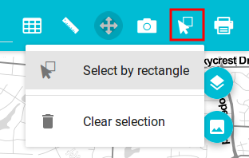

Selection tools are used to select features in the vector layers of the web app that allow selection. Two selection tools are available: Select by Rectangle and Clear Selection.
If the Select by Rectangle tool is active, you can click and drag to define a rectangle. All features in all selectable layers which are within the polygon will get selected. Previous selection, if it exist, will be removed.
Selected features will be rendered in a yellow color, to differentiate them from non-selected ones.
To go back to map navigation mode, click the Navigation button.